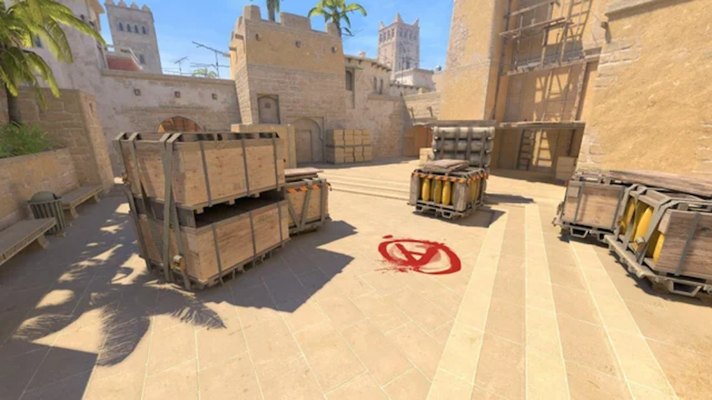
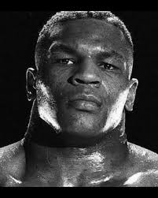
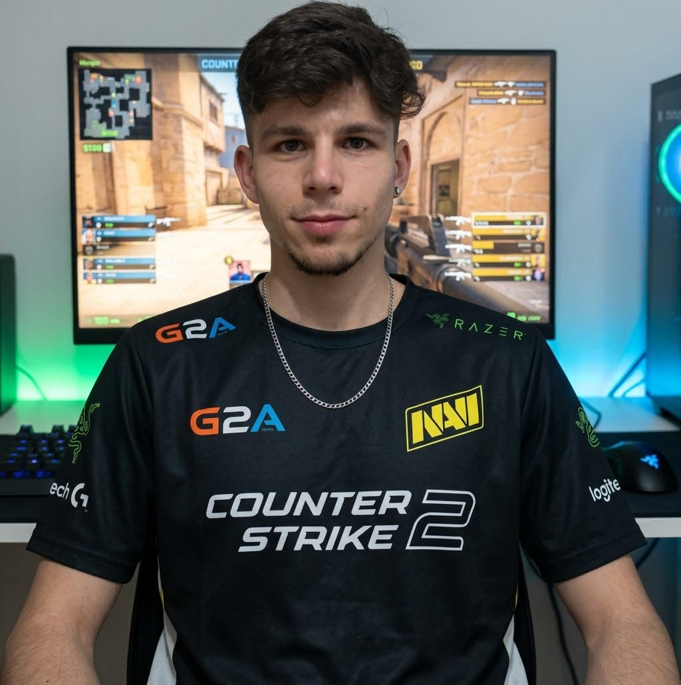
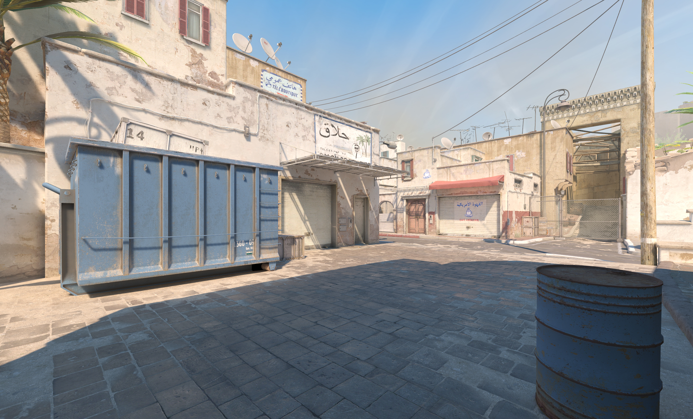
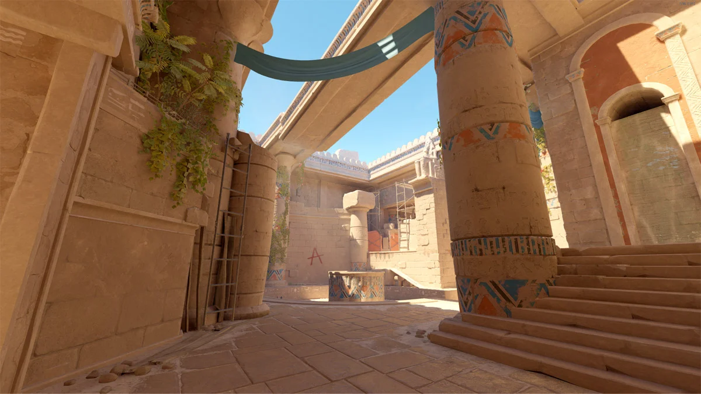
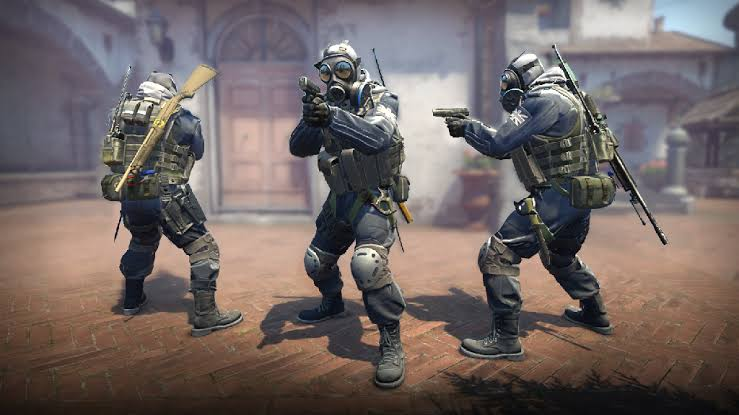
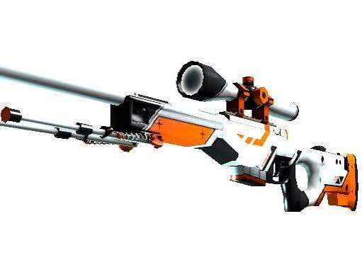
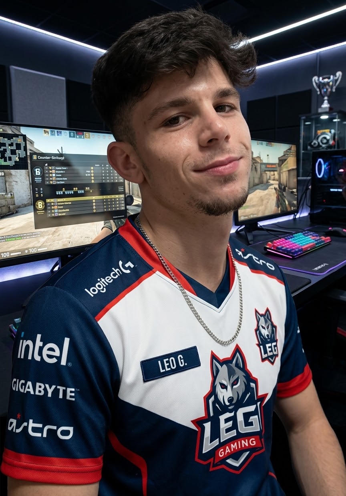
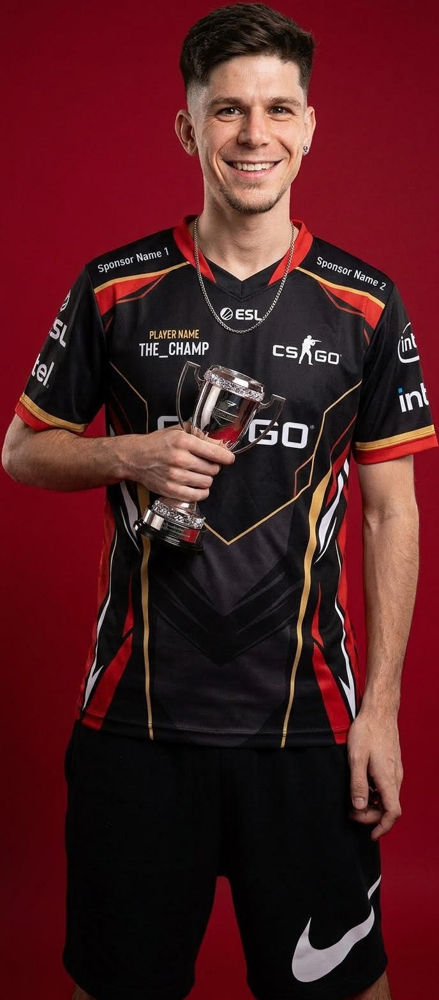
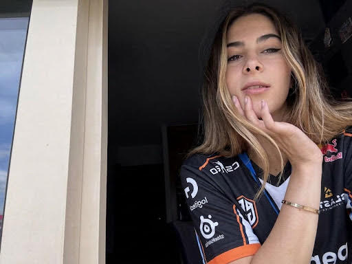

MAP_01O CLÁSSICO FAVORITO
⚠️ EVENTO ESPECIAL
Estás preparada para enfrentar o lobby?
ALERTA MÁXIMO
O lobby está oficialmente em perigo.
Jiba, prepara a tua próxima desculpa...

COUNTER-STRIKE 2
Profissional em dizer «só mais uma». Especialista em encontrar desculpas.
Perfil de paródia. Estatísticas inventadas para fins humorísticos.
🎯 TESTE DE RECRUTAMENTO // CS2
Descobre se és uma lenda do lobby ou um perigo para a própria equipa.
ARQUIVO CONFIDENCIAL · CS2
Um registo oficial das atividades suspeitas do jogador mais inocente do lobby. 🤡

Estado: PERIGOSAMENTE SUSPEITO
"A culpa nunca é minha!"
Reclamações à equipa
Vezes que culpou a Diana
Desculpas de lag
⚖️ VEREDICTO DO TRIBUNAL
O primeiro incidente está prestes a acontecer.
Total de incidentes: 0
JIBA_peek // MAP DATABASE
Três mapas. Mil desculpas. Zero garantias de vitória.

MAP_01O CLÁSSICO FAVORITO

MAP_02O ETERNO REGRESSO

MAP_03AVENTURA NO EGITO
Escolhe um mapa para descobrir o relatório secreto do Jiba.
CS2 // RELATÓRIO CONFIDENCIAL
Há jogadores que carregam a equipa. E depois há aqueles que perguntam: "Quem é que me matou?"
INVESTIGAR O JOGADOR⚠️ O perigo para a equipa ainda está por determinar.
FICHEIRO CONFIDENCIAL Nº 001
Uma análise séria de um jogador que talvez não seja assim tão sério.

IDENTIFICAÇÃO DO SUSPEITO
Especialista em aparecer no sítio errado, na altura errada e com uma confiança inexplicavelmente alta.
* Estatísticas humorísticas, não são dados reais da conta.
DIREÇÃO GERAL // FICHEIRO Nº 002
A mente por detrás deste site. Não joga CS2, mas acompanha o caso e fiscaliza cada desculpa do suspeito.
"Não jogo este jogo, mas percebo quando uma desculpa está mal contada."
A CHEFE DO DOSSIER 👑ARSENAL // EQUIPAMENTO
O equipamento não pode ser responsabilizado por todas as decisões do jogador.

EQUIPAMENTO Nº 001
Ferramenta de trabalho do suspeito. Os resultados continuam sob avaliação.
DADOS NÃO AUDITADOS
Números meramente ilustrativos. Nenhum profissional foi consultado.
01 // PRECISÃO
O adversário está a salvo... até o jogador aprender a apontar.
02 // SOBREVIVÊNCIA
Entra para ganhar. Sai a perguntar quem estava a defender.
03 // ESTRATÉGIA
O plano era perfeito. Pena que ninguém o conhecesse.
CENTRAL DE JUSTIFICAÇÕES
Perdeu uma ronda? Temos uma explicação para tudo.
Carrega no botão para descobrir a justificação da próxima derrota.
À espera da próxima derrota...
CENTRAL DE INTELIGÊNCIA // CS2
A comissão analisou o desempenho do suspeito.
FICHEIRO DO JOGADOR Nº 001
Relatório de partida simulado
ANÁLISE DO DESEMPENHO
O processo encontra-se aberto.
* Resultados aleatórios e fictícios.
OPERAÇÃO JIBA_peek // MISSÕES
Completa desafios, ganha XP e desbloqueia medalhas.
JOGADOR REGISTADO
0 XP para o próximo nível.
O progresso fica guardado neste navegador.
MISSÃO 001
Acertar num adversário sem culpar o rato.
MISSÃO 002
Fazer um plano e avisar a equipa antes de começar.
MISSÃO 003
Terminar uma partida sem dizer que foi lag.
MISSÃO 004
Sobreviver a uma ronda e ajudar a equipa.
MISSÃO 005
Coordenar uma jogada sem confundir a equipa.
MISSÃO 006
Ganhar uma partida e reconhecer o mérito dos colegas.
SALA DE TROFÉUS
Acumula XP para provar que há talento por detrás do nickname.
Acumular 100 XP
BLOQUEADAAcumular 300 XP
BLOQUEADAAcumular 600 XP
BLOQUEADAAcumular 1000 XP
BLOQUEADAOs pontos são fictícios e não estão ligados à conta Steam.
UNIDADE ESPECIAL DE INVESTIGAÇÃO DE MAUS JOGADORES
NOME DE CÓDIGO
ACUSAÇÕES
⚠️ TRIBUNAL COMPETITIVO // CASO Nº 002
O suspeito foi apanhado em mais uma partida. A equipa exige respostas. A justiça exige pontaria.
O processo aguarda julgamento...
🔎 As provas serão reveladas durante o julgamento.
OPERAÇÃO ESPECIAL // DIFICULDADE: DIFÍCIL
Uma decisão errada pode custar a ronda. Tens coragem para assumir o comando, Jiba_Peek?
SIMULADOR TÁTICO CS2
RONDA 01 // INFORMAÇÕES CLASSIFICADAS
Lê a situação e escolhe com cuidado. Nem sempre a decisão mais agressiva é a melhor.
Escolhe uma opção para iniciar a operação.
Simulação fictícia de decisões táticas. Não altera nem acede ao jogo real ou à conta Steam.
DOCUMENTO OFICIAL // CS2
Completa missões, atualiza o certificado e guarda a prova da tua suposta grandeza.
THE LAST BOT ALIVE
✦CERTIFICADO OFICIAL DE DESEMPENHO
A comissão reconhece oficialmente que
JIBA_peek
participou nas operações de Counter-Strike 2 e demonstrou níveis de confiança que continuam sob investigação.
Documento humorístico sem valor oficial. Não representa estatísticas reais do jogo.
Antes de imprimir, atualiza o certificado para incluir o progresso mais recente.
COMISSÃO DE AVALIAÇÃO
Uma avaliação absolutamente científica. Confia.
Descobre o nível atribuído ao jogador pela nossa comissão muito pouco imparcial.
Classificação por determinar.
THE LAST BOT ALIVE APRESENTA
Há jogadores lendários. E depois há o JIBA_peek.
PRÉMIO Nº 001
Atribuído a: JIBA_peek
Pela dedicação exemplar em tornar as rondas mais fáceis... para os adversários.
NÍVEL DE DESASTRE: POR CONFIRMAR
THE LAST BOT ALIVE
Certifica-se que
foi oficialmente distinguido com o título de
Pela sua contribuição extraordinária para o sucesso da equipa adversária.
Assinado: O Departamento de Desastres do CS2
MISSÃO DE ALTO RISCO
Tens uma ronda para sobreviver. E o teu colega é o JIBA_peek.
Estás no mapa com o Jiba. Ouves passos, tens pouca informação e ele acabou de dizer: "Confia em mim".
⚠️ O Departamento de Competência não se responsabiliza pelas decisões do Jiba.
TRANSMISSÃO ENCRIPTADA · CS2
Quando o Jiba abre o microfone, ninguém está a salvo.
FREQUÊNCIA: 0.000 COMPETÊNCIA
O microfone está aberto. Infelizmente.
SISTEMA PRONTO · À ESPERA DE COMUNICAÇÕES
JIBA_peek // SISTEMA DE VIGILÂNCIA
Estamos a investigar os seus peeks suspeitos...

ALVO DETETADO CAM_01 // CS2● SISTEMA PRONTO
Análise avançada de mira, reflexos e decisões questionáveis.
Carrega no botão para revelar os resultados secretos.
JIBA SECURITY SYSTEMS © 2026 — A culpa continua a ser do lag.
JIBA_peek // MISSÃO CRÍTICA
O Jiba plantou a bomba. Agora alguém tem de resolver o problema.
COUNTER-TERRORIST DEVICE
● MISSÃO POR INICIAR
Tens 30 segundos para descobrir o código de 3 dígitos. Se falhares, o Jiba vai dizer que era impossível.
Prepara-te. Desta vez não podes culpar o lag.
Estatísticas guardadas neste navegador. O Jiba não pode apagá-las com a desculpa do lag. 😈
SIMULAÇÃO DE JOGO — NÃO EXISTE QUALQUER BOMBA REAL.
🚨 OPERAÇÃO ESPECIAL
O suspeito está a tentar iniciar mais uma partida de CS2. Diana, apanha-o antes que seja tarde!
O Jiba está a preparar uma desculpa...
Central de controlo oficial do Jiba. Aqui, quem manda sou eu.
Nome: JIBA_peek
Estado: À espera de ordens...
Autoridade da Diana: 0 pontos
Diretora, qual é a tua decisão de hoje?

Para quem culpa os outros sempre que morre.
A culpa nunca é dele. A equipa é que não está à altura.O Jiba foi eliminado. A equipa está em silêncio. O treinador tem algo a dizer.
A investigação ainda não começou...
O Jiba foi eliminado e recusou assumir responsabilidades. Carrega no botão para investigar o caso.
⚖️ Tribunal do CS2 — O Jiba está inocente até prova em contrário.
Atenção, equipa! O Jiba tem mais uma explicação para apresentar ao tribunal.
Estou a analisar a situação...
À espera de uma desculpa oficial.⚠️ O jogador não assume qualquer responsabilidade pelos acontecimentos.
Ele diz uma coisa. Nós explicamos o que realmente quer dizer. A tradução pode ser dolorosa para o ego do jogador.
"Eu nunca tenho culpa!"
"A culpa é de toda a gente, menos minha."
⚠️ Nenhum ego foi responsabilizado durante estas traduções.
ÁREA RESTRITA • ACESSO DA ADMINISTRAÇÃO

"Não jogo CS, mas até o treinador obedece."
🎮 Jogos disputados: 0
👑 Autoridade sobre o Jiba: 100%
🤡 Desculpas do Jiba: Incontáveis
*Estatísticas oficiais de uma investigação nada imparcial.*